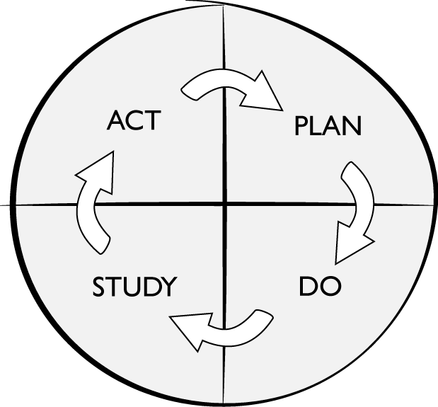

Chapter 5. Continuous API Improvement
It is not necessary to change. Survival is not mandatory.
W. Edwards Deming
In the previous chapter we introduced the API lifecycle and defined ten pillars of work that you’ll need to focus on. The lifecycle and its ten pillars define the work that you’ll need to do for your first API release. The pillars are also needed for all the changes you’ll make during the lifetime of your published API. Managing changes to APIs turns out to be a critical element of an API management strategy.
Changing your API can have a big impact on your software, products, and user experiences. Shipping a code change that breaks an API can also have a disastrous ripple effect on all the components that use it. Changes that don’t break the API can cause big problems if they alter an interface in some unexpected way. API products can produce a complicated nest of dependencies. All this makes change management an important API management consideration.
If you never had to change them, managing your published APIs would be a pretty simple task. But of course, change is an inevitable part of an API in active use. At some point you’ll need to fix a bug, improve the developer experience, or optimize the implementation code. Performing these tasks requires intrusive changes to your deployed API.
The job of managing API changes is made more difficult by its large scope. An API product isn’t just an interface. Instead, it is a collection of many pieces: interfaces, code, data, documentation, tools, and processes. All these parts of the API product can change, and they must all be carefully managed.
API change management isn’t easy, but it is necessary. It’s also liberating. If you weren’t allowed to change your deployed API, your initial release would be much more difficult. You’d have to build your API the way traditional space agencies design and launch rockets. You’d need a huge upfront planning and development investment to make sure the API could run for a long time. You’d also need to account for everything that could go wrong and build accordingly.
Thankfully, you don’t have to work that way. In fact, embracing changeability as a feature of your API can pay you big dividends. Cheaper and easier change means that you can make more changes more often. That gives you the freedom to take more risks (because you’ve reduced the time it takes to fix problems), which means you can make more API improvements.
In this chapter we’ll introduce a continuous improvement philosophy for APIs that embraces change. You’ll learn how a continuous series of small, incremental changes can be the best thing for improving your API product overall. You’ll also learn why APIs are difficult to change and what you can do to improve their changeability. But before we dive into those topics, we’ll need to develop a better understanding of what it means to change an API.
Changing an API In Chapter 1 we started to introduce a distinction between the parts that make up an API product: the interface, the implementation, and the instance. After your API is published, you’ll need to manage changes to all of these parts. Sometimes you’ll need to change all of them together, but you may find yourself changing some of these API elements independently. In this section we’ll address the impact of changes that occur in each these parts. We’ll even add a new type of API element called supporting assets that includes the parts of the API that are used purely to enhance the developer experience of the API product.
These four types of API change will have dependencies on one another. They form a stack of dependent change: a change to the interface model will have far-reaching impacts, while a change to supporting assets can easily be done in isolation. You’ll get a better understanding of why these dependencies exist as we explore each of the types of change.
The API Release Lifecycle Your software changes when you apply changes to it. The steps you take to make the right changes, in the shortest time, with the best quality is your release process. Like software, APIs also have a release process—a set of steps you’ll follow to effect change. We call this process a lifecycle because of the cyclical nature of changes: as one gets implemented another is ready to go. Understanding the release lifecycle is important because it has a big impact on the changeability of your API.
Every change you apply to your API will need to be deployed. The release lifecycle is the set of steps that enables this deployment of a change. It defines how a change that starts with an idea becomes an implemented, maintained part of your system. The release lifecycle brings all of the pillars we described in Chapter 4 together in a sequence of coordinated work.
If the release lifecycle is slow, your API’s rate of change will diminish. If the release lifecycle lacks quality assurance, changing your API will be riskier. If the release lifecycle deviates from change requirements, your API changes will be less valuable. Getting the release lifecycle right is important. The good news is that the API release lifecycle isn’t any different from the software or system delivery lifecycle. That means you can apply the existing guidance for software releases to the components that make up your API. Let’s take a quick look at the most popular ones.
One of the most widely known software release lifecycles is the traditional system development lifecycle (SDLC). This lifecycle has been around in some form or another since the 1960s, and it defines a set of stages for building and releasing a software system. The actual number and names of stages used vary, but a typical set of stages is the following: initiation, analysis, design, construction, testing, implementation, and maintenance.
If you followed these SDLC steps in sequence, you’d be building software in a waterfall style. It’s not actually the waterfall model that Winston Royce invented, but it’s what people call this type of lifecycle today. It means that each phase of the SDLC has to be complete before the next stage begins. So, your change falls down from the top step to each step after it.
One of the drawbacks of the waterfall cycle is that you’ll need to have a lot of certainty about requirements and the problem domain, because it’s not great for dealing with lots of changes to the specifications. If that’s a problem you can use a more iterative software development process. An iterative SDLC allows the software team to perform several iterations of releases for a single set of requirements. Each iteration delivers a subset of the requirements, with the goal of meeting all the requirements through consecutive iterations.
You can take the iteration idea further and adopt a spiral SDLC. In this type of release system, software is designed, constructed, and tested in iterative stages and each iteration has the potential to shape the original requirements. The spiraling SDLC embodies the spirit of Agile and Scrum methods.
Those are three popular forms of the software lifecycle. Each of them has their own advantages and disadvantages, and you’ll need to choose a release lifecycle that makes sense for you. We’ve tried to write this book in a way that gives you the freedom to use whatever style you want. When we talk about change we’ll refer to your release lifecycle, but we won’t tell you what sequence your pillar activities should be in or which software lifecycle you should use. Instead, we’ll focus on the product improvements that a release lifecycle can enable. But before we get into that, let’s talk a little bit more about the types of API changes your release lifecycle will need to support.
Changing the Interface Model Every API has an interface model. This is the information that describes the behavior of an API from a consumer perspective. It describes a set of abstractions that determine how the API will behave and includes details about communication protocols, messages, and vocabularies. The distinguishing feature of an API model is that it hasn’t been implemented—the model is an abstraction and can’t actually be used by a computer system to do anything.
Although an interface model can’t be invoked by a software program, it can be shared with people. Sharing the model requires it to be persisted or expressed. For example, you might express an interface model by drawing boxes and lines on a whiteboard. You can’t invoke the model you’ve drawn, but the model as an abstraction will help your team collaborate on the API design.
Interface models aren’t limited to being whiteboard drawings and sketches on napkins. They can also be expressed using model-driven languages or even with application code. For example, the Open-API Specification is a popular standardized language for describing interface models. Using a standardized modeling language gives you the added bonus of inheriting an ecosystem of tooling that can reduce the cost of implementing your model.
You can draw or compose your model however you like: there aren’t any rules about the level of detail that a model should provide or constrains on the format you need to use to communicate it. But keep in mind that whatever method you choose for expressing the model will have a big impact on the level of detail and description you can include. Whiteboards and freehand drawings provide maximum freedom of thought but are constrained in their physical size and implementability. API description languages provide a quicker route to implementation, but limit your freedom with heavily defined syntax and vocabularies.
The design pillar of our API lifecycle is focused on producing and changing the interface model, so most of the work we are describing fits neatly in there. But the relevance of the interface model isn’t limited to this design work. In fact, most of the pillars in the lifecycle are dependent on or impacted by the interface model you define. This is because they are also expressions of your model.
Just as you may have expressed your interface model as a picture on a whiteboard or in the Open-API language, you’ll also express the model in your application code, API documentation, and data model. When the interface is published and developers begin to write code that uses it, they will also be expressing your model within their implementations. All of these expressions of the model imply a dependency relationship—this is why changes to the model are the most impactful.
DOMAIN-DRIVEN DESIGN This idea of model-driven software where the implementation exists as an expression of the model comes to us from Eric Evans’ domain-driven design (DDD) software design approach. If you haven’t yet read his book, Domain-Driven Design: Tackling Complexity in the Heart of Software (Addison-Wesley), you should put it on your list!
The best API products have interface models that are consistent across the entire surface. That means developers shouldn’t have to reconcile conflicts that arise between the documentation and the published API because the models they’ve expressed differ in some way. This desire for consistency increases the challenge of making interface model changes, as those changes need to be synchronized across the API product.
Using a consistent model doesn’t mean that your implementation code and internal database need to use the same model as your API’s interface. In fact, it’s usually a bad idea to use the same model for your interface, code, and data—what works best for your interface users is not necessarily what works best inside your own implementation. Instead, using a consistent model means that the internal parts of your API implementation will need to be translated into this consistent interface model before they reach the surface of the API.
Interface model changes are highly impactful, but these changes are inevitable for any API product that is in active use. You may need to add support for a new feature, make a change to improve API usability, or perhaps deprecate part of the interface because your business model has fundamentally changed. Because of all the dependencies involved, interface model changes always have the potential to impact the code that has been written in consuming applications that use the API.
The potential impact of an interface model change to API consumers has a lot to do with the level of coupling that has been introduced between their code and your interface. If you design and implement APIs that provide loose coupling as a feature, you can get away with making bigger interface model changes with less impact. For example, using event-driven or hypermedia-style APIs has the benefit of less coupling between the client code and the API. In the case of an event-driven system you might be able to change a pattern matching algorithm without making any changes to the component that sends events. A hypermedia API might let you manipulate the required properties for an invocation without changing the client code that makes the call.
Choosing an appropriate style of interface can help you reduce the cost of interface model changes. But that increased changeability for APIs doesn’t come for free. You’ll need to build the appropriate infrastructure and implementations on both the client and the server side to make them work. Oftentimes the constraints and contexts that you are working in will limit your choices—for example, the developers who are writing client software for your API may not have the expertise to write hypermedia applications. In these cases you’ll just have to accept that interface model changes have a high cost.
The best way of reducing the external impact of interface model changes is to make these changes before the interface is shared. As Joshua Bloch, designer of the Java Collections API, tells us: “Public APIs, like diamonds, are forever.” Once you share that interface for others to use, you’ll have a more difficult time making changes to it. The wise API product owner front-loads changes to the interface model in the design stage as much as possible to avoid paying the high price of change after the API is published.
Changing the Implementation The implementation of the API is the interface model expressed in the components that bring the model to life. The implementation is what allows the interface to actually be used by another software component. An API implementation includes code, configuration, data, infrastructure, and even protocol choices. These implementation components are usually the private parts of the product—the things that make the API work, but whose details we don’t need to share with the consumers who plan to use it.
Your API can’t be published without an implementation, and you’ll continually need to change that implementation over the life of the API. Because the implementation is an expression of the interface model, you’ll find yourself changing the implementation whenever the model changes. But sometimes you’ll have an opportunity to change the implementation independently. For example, you may need to fix a bug in the implementation code, reduce the latency time of a poorly performing API, or even completely rewrite the code because you just don’t like it anymore.
In these cases, where the implementation change is independent from the model, the impact of the change is hidden behind the interface of the API. This means that consumers won’t have to make any changes to take advantage of the improvements you are introducing. This doesn’t mean they won’t be impacted—for example, a performance optimization might have a big effect on the perceived performance for an end user. But it does mean that you can avoid the work of managing changes to client software that is dependent on the API. So, implementation changes can be made well after the API has been published and shared without the same rising cost of a change to the interface model.
The risk that comes from an independent implementation change is that it deteriorates the reliability, consistency, or availability of an API product. For example, if a code change breaks a running instance of the API or an implementation behaves differently from the documentation, your client applications will suffer. Changes to the implementation have the potential to impact the instance and supporting assets of the API, so each of these elements have to be updated, tested, and validated accordingly.
Changing the Instance As we’ve described earlier, the implementation of an API expresses the model as an invokable, usable interface. But that implementation can’t really be used until it’s running on a machine on a network that is accessible to consumer applications. The instance of an API is a managed, running expression of the interface model that has been made available for your target consumers to use.
Any change to the interface model or the implementation will require a corresponding deployment or change to the API’s instances. The API hasn’t really been changed until you’ve updated the instances that its consumer applications use at runtime. However, it’s also possible for you to change an API instance independently without altering the model or implementation. This could be the simple case of changing a configuration value or it could be something more complex like cloning and destroying a running instance of the API. The impact of these types of changes is limited to the runtime properties of a system, with availability, observability, reliability, and perceived performance being the ones that are most often highlighted.
Making independent API instance changes less impactful to the system requires special consideration for the design of the system architecture. We’ll discuss the system features and factors that matter the most later in the book when we introduce the API landscape.
Changing the Supporting Assets If an API is a product, it needs to be more than some code that expresses a model running on a server. In Chapter 1 we learned that supporting the work of developers who have to use our APIs is an important part of the API-as-a-Product philosophy. Creating a better developer experience almost always requires some supporting assets that live outside the implementation of the interface. For example, these assets might include API documentation, developer registration, troubleshooting tools, key material distribution, and even human support staff to help developers resolve problems.
Over the life of your API, the material, processes, and people that support the API product will need to be updated and improved. Oftentimes, this will be a result of a cascading change made to the interface model, implementation, or instance of the API; supporting assets that exist further “downstream” will also be affected when you change any part of your API. This means that the change cost for your API will grow as you develop more supporting assets for the developer experience.
It’s also possible to make independent changes to supporting assets. For example, you may want to change the look and feel of your documentation page as part of a modernization effort. These types of changes can have a big impact on the developer experience for your API product, but have no impact on the interface model, implementation, or instance—except in an indirect way as a result of increased usage of and interest in the product.
Changes to supporting assets have the least cascading impact, but they can also produce the highest change costs because they are the most dependent on the other API elements. Lowering the cost of changes to supporting assets can pay big dividends in terms of the overall cost of change for the API product. So, it makes sense to invest in design, tools, and automation to reduce the change effort for these assets.
Managing Change Continuously So far, we’ve described four types of changes that you’ll need to deal with in your API changes to the interface model, implementation, instance, and assets. Each has different impacts on the API and consuming applications, so changes need to be managed carefully to make sure you don’t degrade the quality of your API product.
If we apply the AaaP way of thinking, we can frame these changes as attempts to improve the API product rather than just change for the sake of change. That means that any time we spend on changing the interface, implementation, instance, or assets should be justified by an improvement to the developer experience or a reduction in maintenance cost for the product’s sponsors.
Not every individual change will improve your API product immediately. For example, you might improve the way your API instances can scale in order to meet future demand—a change that won’t pay off until usage grows. A change like this won’t lead to an immediate measurable improvement in the developer experience, but it could prevent a degradation of the experience in the future. The point is that any change should be considered in terms of its ability to improve the product, even if the gratification for that investment will be delayed.
Incremental Improvement If change is the path to improvement of an API product, then a reasonable management goal is to make it as easy as possible to change your API. The best version of your API will come from a continuous cycle of changes or improvements. Some of these changes may offer very little immediate improvement—in fact, some of your attempts at improvement could even cause a temporary degradation to the developer experience for your API. If this happens you’ll need to make another improvement to undo the impact of your failed experiment. Over time, your product and the developer experience will benefit from these continuous incremental efforts to improve the API.
Incremental improvement means that you have an idea of the direction you want to head in, but choose to take small steps toward that objective instead of releasing a “big-bang” change that attempts to meet all your future requirements. Applying a series of smaller changes gives the API team an opportunity to react to the results of each change, effectively performing a series of small experiments in order to find the best path toward a goalpost that continues to move.
This concept of continually making small improvements is a well-established change pattern with foundations in the manufacturing industry. In the 1980s, quality management pioneer W. Edwards Deming articulated his version of this idea with a philosophy he called the “System of Profound Knowledge.” Deming’s system embraces the complex nature of large organizations of workers and applies a scientific method for improving the way they produce products. One of the cornerstones of his approach is the Plan-Do-Study-Act (PDSA) cycle that defines an iterative, experiment-driven method for improving a process (Figure 5-1).

For example, if you wanted to improve the developer experience of your API, you might start with a goal of reducing the time it takes for developers to learn how the interface works. Your plan might be to update the documentation to make it more developer-friendly. You could then “do” the plan by updating the documentation asset, followed by a study of the number of errors that are generated by developers who’ve viewed the new documentation. With these measurements you could reassess the type of documentation changes that should be made, or even make the decision to perform a more impactful change to the interface model itself.
The PDSA wheel describes an iterative, experiment-based process to improve a system: you make small changes, measure the impact of those changes, and use the knowledge you gain to continue to improve the system. It’s a really effective way of dealing with systems that are complex—the kind of system where it’s hard to tell exactly what the results of a small change will be.
Deming’s ideas and his PDSA wheel were originally designed for improving the processes for quality management in factories and assembly plants, but, the pattern has turned out to be useful wherever there is a need to improve a complex system—including software systems. Software methodologies like Lean, Kaizen, and Agile all share this same principle of continuously improving an identified target. Sometimes that improvement target is a process, other times it’s a product, but in all cases it’s the continuum of objective-oriented change that leads to agility and success.
We aren’t going to teach you how to apply any specific continuous improvement change methodology in this book, but we’ll try to make as much use of the concept of incremental improvement as we can. Applying a philosophy of continuous, incremental improvement to your API product means designing the process of change purposefully for all four types of API changes. This means designing a system that makes changes both efficient and low risk, reducing the cost of implementing a single unit of change and in turn giving you the freedom to perform changes more often. We’ll leave it up to you to work out the mechanics, but adopting a continuous cycle of improvements for your API is a key requirement for delivering an API product that can maintain a consistently high quality.
API Change Velocity If you are going to be making lots of small improvements to your API product, you’ll need to make sure those changes can be applied quickly. Otherwise, the cost of making continuous changes will become a big problem. Implementing improvements faster will give your API’s sponsors a shorter path to innovation and a competitive advantage in the market—but, your changes have to have a reasonable level of quality or you risk damaging the reliability and quality of your API product.
Improving both the speed and quality of change is important whether your API is a public, private, or partner-facing one. If you can’t apply quality changes to your interfaces quickly enough you’ll end up slowing down your ability to improve user experiences, launch new products, and improve business capabilities. Optimizing the speed and safety of your API change lifecycle contributes to the overall speed of change for your organization.
But with a finite amount of people, money, and time available, how can you make changes to the API in a way that optimizes those resources? As your proposed change goes through each of the stages of the API release lifecycle, how do you make sure you are traveling at maximum velocity?
There are three significant ways to improve the velocity of your API lifecycle without degrading quality: through tools, organizational design, and effort reduction.
TOOLS AND AUTOMATION One solution for improving the speed and safety of product changes is to introduce tooling and automation in the place of human effort. Tooling is an attractive option because it can reduce the possibilities of human error while reducing the time it takes to perform a task. For example, Continuous Integration and Continuous Delivery (CI/CD) tools can automate the process of testing and releasing an API implementation, decreasing the cost of deploying an API change significantly.
However, the usefulness of a tool is dependent on its quality and the time you are willing to invest to set it up and configure it. There will always be an up-front initial cost and risk associated with introducing tooling, so if the API product is already well established and in active use (this is a phase of an API that we will later refer to as “realization”) you’ll want to do this carefully, on an experimental basis.
All types of API changes can be automated with tooling. At the time of writing, there is a healthy market for API security, documentation, deployment, and configuration tools that facilitate faster and more reliable change processes.
ORGANIZATIONAL DESIGN AND CULTURE The work we do when we make changes to an API can be classified as knowledge work—the type of work that requires a coordinated process of decision making. If you are building a single API within a small team, the coordination effort is often very small, but at the scale of a large organization with multiple APIs and software components, the higher cost of coordinated decision making quickly becomes a drag on the ability of a single team to perform a change to an API product.
This human element of the change process is usually the biggest bottleneck to achieving high velocity, primarily because it’s the most difficult to understand and to change. You can’t buy an organizational design or culture in the same way you can buy an API documentation or CI/CD tool.
In Chapter 7, we’ll spend more time diving into the organizational aspects of API management, including opportunities for building a decision-making platform that facilitates high-speed, high-quality change.
ELIMINATING WASTED EFFORT Another way to boost the speed and quality of improvements is by expending less effort on them. If you eliminate the kind of API work that offers the least return on investment to your product goals, you can substantially improve your speed of change. Removing wasted effort also removes opportunities for things to go wrong, resulting in a more reliable net change process.
For example, an API that is built and used by the same development team probably doesn’t need the same level of investment in documentation as a public API used by hundreds of third-party developers. There are lots of permutations and variables to consider here. In Chapter 6, when we talk about the API product lifecycle, we’ll introduce one set of variables that can give you a starting point for considering the kinds of investments you want to make.
Improving API Changeability We’ve established some good reasons for taking a continuous improvement approach to the API lifecycle. We’ve shown that performing many small changes at high velocity is an ideal way to improve an API product, and we’ve delved into the types of changes and improvements that are necessary to get there. But in practice, it’s difficult to apply a continuous improvement philosophy to APIs because the cost of change grows as the interface becomes more complicated and it begins being used by other teams.
There are three main costs associated with changing an API that might inhibit changeability: the cost of doing the work, the opportunity cost of a change, and the cost associated with changing dependent components. If you can minimize these three change costs you’ll have more freedom to change the API with greater frequency. More changes means more opportunities to incrementally improve your product.
Effort Costs The most obvious cost of changing the interface model, implementation, instance, or supporting assets of your API is the time, energy, and money that you’ll need to spend as you push a change through the API lifecycle. If you can reduce this basic cost of change you’ll greatly improve your chances of introducing more improvements to the API product.
Earlier, we talked about the need for velocity of change and identified that effort reduction, tooling, and organizational change can help lower some of this work cost for an API. But in truth, improving the velocity of change is a complex problem.
The amount of resources required to make an API change is a product of at least the following factors: the complexity of the problem, the experience and talent of the people doing the work, the change process design, and the complexity and quality of the implementation. That’s a long list, and it isn’t exhaustive. Fortunately, reducing work costs is a core goal of professional software development, and there is a mountain of research, advice, and opinion available to help—and the things that work for changes to software generally work for API products as well.
Identifying the specific change methodologies, quality management processes, architectures, implementations, and automation tools you can use to reduce your work effort is beyond the scope of this book. We’ve tried to introduce a few core strategies, patterns, and philosophies that will give you the best chance of achieving velocity of change, but you’ll need to do the hard work of turning that general advice into something that works for your organization.
Opportunity Costs Another kind of cost that might inhibit change is the desire to refrain from changing the API because you want to gather more information first. Losing the opportunity to gather more information becomes a cost for changing the API. Tom and Mary Poppendieck, creators of the Lean software development approach, describe this activity as waiting until the last responsible moment to make a critical decision.
To make things more complicated, you must also consider the cost of not making a change and the associated missed opportunities to both improve your product and gather feedback about the change. In a lot of situations, it’s better to ignore the “last responsible moment” principle so that you don’t muddy your thinking with the fear that you should wait until you know more. Making small code changes to a published software component is an example where you might deem the decision not critical enough to worry about this type of opportunity cost. This is particularly true if you have immediate feedback about a mistake and the time to recover from the problem is small.
A lot of the typical changes to API products fit these characteristics of being non-critical and easy to recover from. For example, changing the look and feel of human-readable API documentation provides fast feedback in terms of its successful implementation and is easy enough to reverse if it turns out to be problematic. But some types of API changes are difficult to recover from and will require you to tread carefully—for example, changing the interface model of your API, which can have far-reaching consequences. These types of changes need to be managed appropriately and the cost of changing without sufficient information should always be considered.
One way to reduce the opportunity cost of making a change is to do a better job of gathering information in the first place. In Chapter 8 we’ll introduce the system quality of visibility, which can greatly reduce the opportunity cost of making API changes.
Coupling Costs When it comes to APIs, and especially when it comes to the interface model of an API, the biggest blocker to free and easy change is the coupling that we create between the API and its consumers. There are lots of different styles of APIs, but no matter which one you choose, you’ll always end up introducing some type of dependency or coupling between the senders and receivers of messages. This coupling has a big impact on what you can change about the API and when you are free to change it.
APIs are just vessels for communication and conversation between software modules. When humans communicate, they use a shared understanding of vocabulary, gestures, and signals to facilitate a meaningful conversation. Software components also need to have a shared knowledge in order to have a conversation. For example, shared knowledge of message vocabularies, interface signatures, and data structures are all useful in building a meaningful interoperation between two components. The important changeability factor for APIs is how many of these conversational rules are hardcoded into the released component’s code. When the semantics of an API are defined at design time, the cost of changing the interface rises.
This coupling is unavoidable and can exist in all kinds of places in many different forms. In fact, when you hear people talk about a particular API being “tightly coupled” or “loosely coupled,” it often takes a bit of detective work to understand exactly what they mean. Do they mean that the network address of the API has been hardcoded somewhere? Are they talking about the changeability of the semantics and vocabulary of messages? Or maybe they are referring to how easily they can create new API instances without impacting the API consumers.
For example, event-driven architectures are often described as offering loose coupling between event senders and receivers. But frequently on closer examination it turns out that the loose coupling only pertains to the knowledge that a message sender has about which components are receiving its messages. In fact, the structure, format, or vocabulary of event messages can cause many of the messages’ receivers to break.
Some API styles in particular are very prescriptive in what they define at design time. If you are building an RPC-style interface you’ll almost certainly use some kind of interface definition language that documents the interface model with high precision. The nice thing about having a highly specific interface model is that the code becomes easier to write—in fact, RPC-style APIs often have ample tooling to make it as easy as possible to get started.
The problem with the highly specified interface model becomes apparent when you want to make changes to the interface model. If you adopt a continuous improvement model you may realize that there are lots of small improvement opportunities for your interface. But because the semantics of the API are hardcoded in the client’s released code, changing the interface model will require a corresponding code change.
Generally, we want to avoid breaking clients that are dependent on our APIs. But in practice, you may find that you care less about the reliability of some clients than others. For example, an API change that will break a little-used, third-party application is more justifiable than a change that would break your organization’s customer-facing mobile application.
There isn’t a black-and-white answer to how much coupling is appropriate for your API and when you should be willing to make changes. If loose coupling was free we would all do it, but long-term value comes with short-term costs and building APIs that handle change very well requires up-front effort. You’ll need to make a decision pretty early on about the cost of change and what type of API you think you’ll need.
Keep in mind that a low degree of changeability combined with a high cost of code change means that continuous improvement of the API’s model isn’t a realistic strategy. In the best case it means that your continuous improvements will be limited to interface model changes that don’t break clients. In this scenario it’s a good idea to start with a big design up front approach to the interface model before it gets used heavily.
ISN’T “BIG DESIGN UP FRONT” AN ANTI-PATTERN? If you are familiar with the Agile manifesto, you may be wondering if what we’ve described in this section is an example of the big design up front (BDUF) anti-pattern that Agile practitioners try to avoid. Avoiding a heavy design phase makes a lot of sense for software engineering because it means we can apply short iterations of change with a continuous effort of design based on a growing implementation. This iterative approach to designing a product provides a lot more room for adaptability, so avoiding BDUF is a good idea.
Unfortunately, when it comes to APIs it can be difficult to introduce iterative change in this way because of the ripple effect that making a change to the interface has on the application code that uses it. We aren’t suggesting that all of the details of an API need to be designed ahead of time, but just like the architecture of a building or the composition of a marble statue, APIs tend to be difficult to change once they are made (and published).
Summary In this chapter we outlined the four types of API changes: changes to the interface model, implementation, instances, and supporting assets. We also introduced the continuous improvement model of change and identified why it’s a good approach to use for your APIs. To make it work, we underscored the importance of achieving change velocity and walked through the main blockers for API changeability, including the coupling between client code and an API.
In the next chapter we’ll introduce a maturity model that can help you frame your continuous changes within the context of an ever-evolving API product.